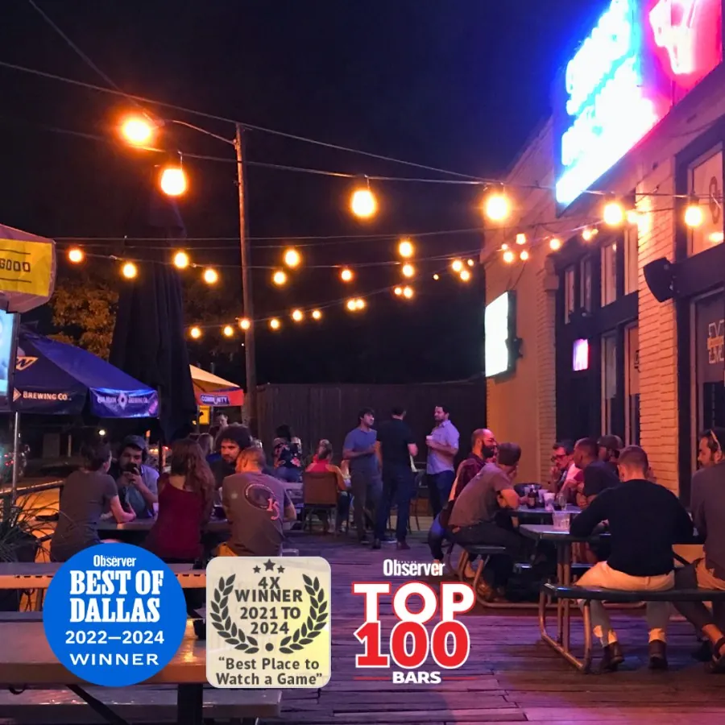

Since 1952
The best and oldest bar in Dallas
Stan’s has stayed true to tradition since blues player E.E. Stanley opened the joint in 1952.
1952
Blues player E.E. Stanley opens Stan’s on Greenville Avenue.
2019
D Magazine names Stan’s the Best Sports Bar in Dallas.
2022
The 70th anniversary party raises over $20,000 for BvB Dallas.
Today
Mike McRae and Gabe Nicolella run a made-from-scratch kitchen and a renovated back patio.
New owners, same Stan’s
Owners Mike McRae and Gabe Nicolella updated the menu with made-from-scratch items and renovated the back patio with an arbor and outdoor TVs. Stan’s continues to be a haven for sports fans, college games, alumni groups and tons of special events.
Our 70th anniversary party raised over $20,000, donated to BvB Dallas in their fight Tackling Alzheimer’s. See you for the 75th.
